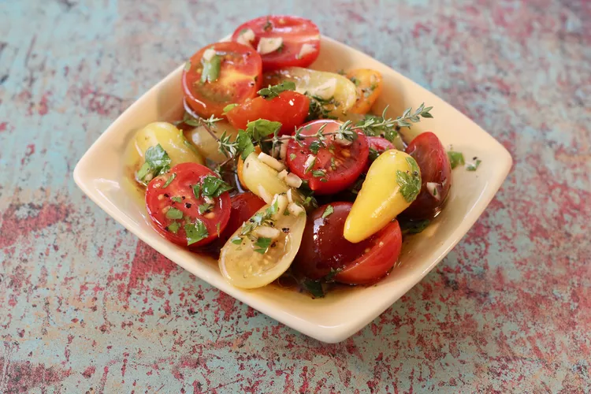

Marinated Garden Tomatoes

My grandmother first served this wonderful dish with tomatoes fresh from her garden when I was a child.
It's great on a hot day for a crisp side dish.
Often times I use the leftover marinade when the first batch is gone and add it to the next batch.
It's tangy taste is much loved, even by my non veggie-loving kids!
INGREDIENTS
- ¾ cup red wine vinegar
- ½ cup olive oil
- ⅓ cup chopped fresh parsley
- 1 tablespoon snipped fresh thyme
- 3 cloves garlic, minced
- 2 teaspoons coarsely ground salt
- ½ teaspoon coarsely ground black pepper
- 6 large tomatoes, sliced 1/4-inch thick
- ½ cup thinly sliced green onions
STEPS/PROCEDURES
- Combine vinegar, olive oil, parsley, thyme, garlic, salt, and pepper in a small bowl; mix well.
- Place tomatoes and onions in an 11x13-inch glass dish.
Pour marinade on top, making sure to coat vegetables evenly.
Cover and refrigerate, 4 hours to overnight.